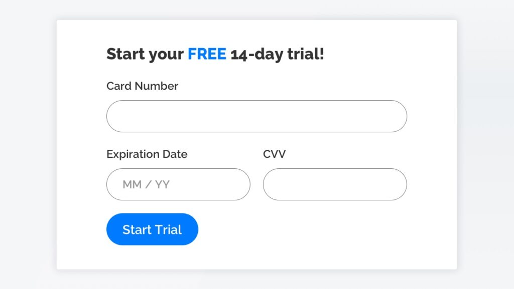

A free trial quietly turns into a paid subscription. Users aren’t clearly reminded before being charged, and payment continues automatically unless they navigate a difficult cancellation process.
A free trial collects payment details upfront and begins charging automatically without a clear reminder before renewal.
Forced continuity turns a low-risk exploration into an unexpected financial commitment. Users often believe a trial is an opportunity to evaluate a product, not the start of a hidden contract. When charges begin without clear notice, people feel deceived rather than converted. This pattern preys on forgetfulness and busy schedules, disproportionately affecting vulnerable users such as students or the elderly. It shifts the business model from earning loyalty to profiting from confusion, which can cause significant emotional and monetary harm.
Notify users before payment and require active confirmation. Example: An email and in-app alert saying, “Your trial ends in 3 days—continue for $9.99/month?” with a one-click opt-in.
Prioritize informed consent and timely communication. Use reminders, grace periods, and opt-in renewals to ensure users actively choose to continue. Financial commitments should be treated as high-stakes interactions that require explicit confirmation, not passive silence. Ethical UX measures success by satisfied customers, not accidental subscriptions.